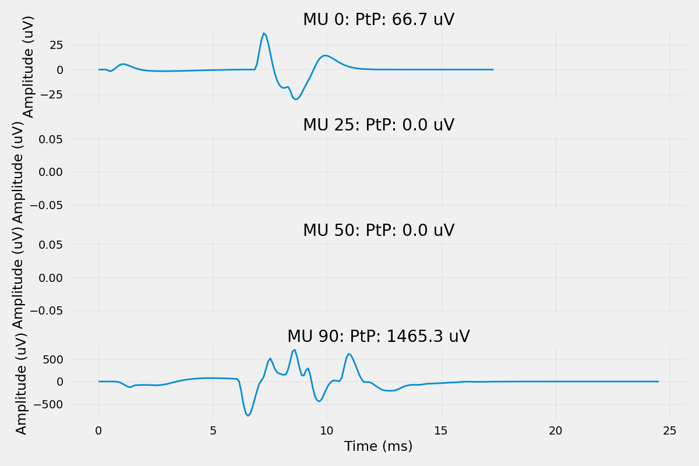
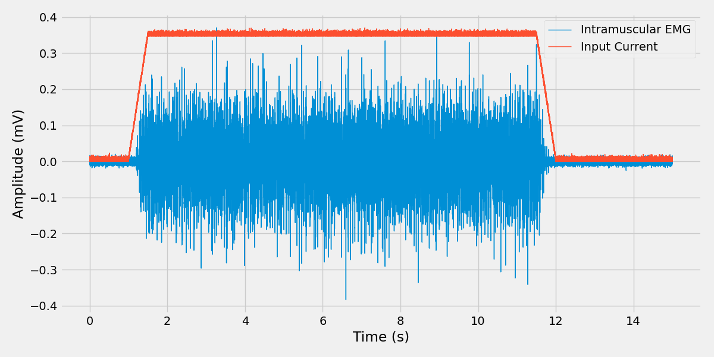

Note
Go to the end to download the full example code.
Intramuscular EMG Signals#
This example demonstrates how to simulate intramuscular EMG signals using needle electrodes. It shows the complete pipeline from muscle model creation to EMG signal generation with realistic noise and motor unit detectability.
Note
Intramuscular EMG (iEMG) is recorded using needle electrodes inserted directly into the muscle tissue. This provides high spatial resolution and allows for the detection of individual motor unit action potentials (MUAPs). Unlike surface EMG, intramuscular recordings can capture the activity of deeper motor units and provide better selectivity.
- Key Features:
High spatial resolution: Needle electrodes can detect individual MUAPs
Deep muscle access: Can record from muscles not accessible by surface electrodes
Motor unit discrimination: Individual motor units can be identified and tracked
Realistic noise modeling: Includes physiological noise and recording artifacts
Import Libraries#
from pathlib import Path
import joblib
import matplotlib.pyplot as plt
import numpy as np
import quantities as pq
import seaborn as sns
from myogen import simulator
from myogen.utils.types import CURRENT__AnalogSignal, SPIKE_TRAIN__Block
plt.style.use("fivethirtyeight")
save_path = Path("./results")
save_path.mkdir(exist_ok=True, parents=True)
Define Parameters#
All parameters now use quantities for type safety and unit validation.
# Electrode parameters
inter_electrode_distance = 2.0 * pq.mm # Electrode spacing (typical: 1-5 mm)
electrode_position = (
0.0 * pq.mm, # Center of muscle (x)
0.0 * pq.mm, # Center of muscle (y)
15.0 * pq.mm, # Middle of muscle (z) - near endplate zone
)
Load Muscle Model#
Load the muscle model with the generated recruitment thresholds.
muscle: simulator.Muscle = joblib.load(save_path / "muscle_model.pkl")
Create Intramuscular Electrode Array#
Set up a differential needle electrode for intramuscular recordings. All distance and angle parameters use quantities for type-safe unit validation.
electrode = simulator.IntramuscularElectrodeArray(
num_electrodes=4,
inter_electrode_distance__mm=inter_electrode_distance,
differentiation_mode="consecutive",
position__mm=electrode_position,
)
Initialize Intramuscular EMG Simulator#
Create the intramuscular EMG simulator with the muscle model and electrode. All simulation parameters now use quantities for type safety and unit validation.
# Simulate ~30 MUs sampled across the full recruitment range so the
# composite iEMG sums enough MUAPs to look like a real recording, while
# still keeping the MUAP computation reasonable. A small ``MUs_to_plot``
# subset drives the per-MU MUAP figure below.
MUs_to_simulate = list(range(0, 100, 3)) # 0, 3, 6, ..., 99 -> 34 MUs
MUs_to_plot = [0, 25, 50, 90]
print("Initializing iEMG simulator...")
iemg_sim = simulator.IntramuscularEMG(
muscle_model=muscle, electrode_array=electrode, MUs_to_simulate=MUs_to_simulate
)
Initializing iEMG simulator...
Calculate Motor Unit Action Potentials#
Compute the MUAPs for the selected motor units at the electrode positions. Using parallel processing for faster computation.
print("Computing motor unit action potentials...")
muaps__Block = iemg_sim.simulate_muaps(n_jobs=2) # Use 2 parallel jobs
# Display MUAP amplitudes for the plotted MUs
print("\n=== MUAP Amplitudes ===")
for mu_idx in MUs_to_plot:
segment = muaps__Block.segments[mu_idx]
if segment.name != "MUAP_None":
signal = segment.analogsignals[0].magnitude
ptp_values = np.ptp(signal, axis=0)
max_ptp = np.max(ptp_values)
print(f"MU {mu_idx:2d}): Max PtP = {max_ptp * 1000:6.1f} uV")
joblib.dump(iemg_sim, "./results/iemg_simulator.pkl")
Computing motor unit action potentials...
Creating motor unit simulators: 0%| | 0/100 [00:00<?, ?Simulator/s]
Creating motor unit simulators: 100%|██████████| 100/100 [00:00<00:00, 4874.77Simulator/s]
Setting up NMJ distributions: 0%| | 0/100 [00:00<?, ?Simulator/s]
Setting up NMJ distributions: 38%|███▊ | 38/100 [00:00<00:00, 374.97Simulator/s]
Setting up NMJ distributions: 76%|███████▌ | 76/100 [00:00<00:00, 179.33Simulator/s]
Setting up NMJ distributions: 100%|██████████| 100/100 [00:00<00:00, 83.35Simulator/s]
Setting up NMJ distributions: 100%|██████████| 100/100 [00:00<00:00, 103.18Simulator/s]
Computing MUAPs: 0%| | 0/34 [00:00<?, ?MU/s]
Computing MUAPs: 3%|▎ | 1/34 [00:02<01:36, 2.92s/MU]
Computing MUAPs: 6%|▌ | 2/34 [00:03<00:45, 1.41s/MU]
Computing MUAPs: 9%|▉ | 3/34 [00:04<00:34, 1.12s/MU]
Computing MUAPs: 12%|█▏ | 4/34 [00:04<00:24, 1.21MU/s]
Computing MUAPs: 15%|█▍ | 5/34 [00:05<00:26, 1.08MU/s]
Computing MUAPs: 18%|█▊ | 6/34 [00:06<00:24, 1.12MU/s]
Computing MUAPs: 21%|██ | 7/34 [00:07<00:27, 1.03s/MU]
Computing MUAPs: 24%|██▎ | 8/34 [00:08<00:26, 1.02s/MU]
Computing MUAPs: 26%|██▋ | 9/34 [00:10<00:29, 1.17s/MU]
Computing MUAPs: 29%|██▉ | 10/34 [00:12<00:33, 1.40s/MU]
Computing MUAPs: 32%|███▏ | 11/34 [00:13<00:34, 1.50s/MU]
Computing MUAPs: 35%|███▌ | 12/34 [00:16<00:43, 1.97s/MU]
Computing MUAPs: 38%|███▊ | 13/34 [00:21<00:56, 2.70s/MU]
Computing MUAPs: 41%|████ | 14/34 [00:24<01:00, 3.00s/MU]
Computing MUAPs: 44%|████▍ | 15/34 [00:28<00:58, 3.09s/MU]
Computing MUAPs: 47%|████▋ | 16/34 [00:33<01:09, 3.87s/MU]
Computing MUAPs: 50%|█████ | 17/34 [00:41<01:23, 4.94s/MU]
Computing MUAPs: 53%|█████▎ | 18/34 [00:48<01:29, 5.57s/MU]
Computing MUAPs: 56%|█████▌ | 19/34 [00:58<01:41, 6.80s/MU]
Computing MUAPs: 59%|█████▉ | 20/34 [01:09<01:55, 8.22s/MU]
Computing MUAPs: 62%|██████▏ | 21/34 [01:22<02:05, 9.67s/MU]
Computing MUAPs: 65%|██████▍ | 22/34 [01:31<01:52, 9.35s/MU]
Computing MUAPs: 68%|██████▊ | 23/34 [01:46<02:01, 11.01s/MU]
Computing MUAPs: 71%|███████ | 24/34 [01:56<01:47, 10.77s/MU]
Computing MUAPs: 74%|███████▎ | 25/34 [02:18<02:09, 14.34s/MU]
Computing MUAPs: 76%|███████▋ | 26/34 [02:35<01:59, 14.93s/MU]
Computing MUAPs: 79%|███████▉ | 27/34 [03:13<02:33, 22.00s/MU]
Computing MUAPs: 82%|████████▏ | 28/34 [03:32<02:06, 21.12s/MU]
Computing MUAPs: 85%|████████▌ | 29/34 [04:23<02:30, 30.06s/MU]
Computing MUAPs: 88%|████████▊ | 30/34 [04:36<01:39, 24.79s/MU]
Computing MUAPs: 91%|█████████ | 31/34 [05:55<02:02, 40.99s/MU]
Computing MUAPs: 94%|█████████▍| 32/34 [06:13<01:08, 34.17s/MU]
Computing MUAPs: 97%|█████████▋| 33/34 [07:38<00:49, 49.38s/MU]
Computing MUAPs: 100%|██████████| 34/34 [08:14<00:00, 45.44s/MU]
Computing MUAPs: 100%|██████████| 34/34 [08:14<00:00, 14.54s/MU]
=== MUAP Amplitudes ===
MU 0): Max PtP = 66.7 uV
MU 25): Max PtP = 0.0 uV
MU 50): Max PtP = 0.0 uV
MU 90): Max PtP = 2011.8 uV
['./results/iemg_simulator.pkl']
Visualize Individual MUAP Shapes#
Display the MUAP waveforms for the three selected motor units to demonstrate how motor unit size affects MUAP amplitude and shape.
fig, axes = plt.subplots(len(MUs_to_plot), 1, figsize=(12, 8), sharex=True)
for plot_idx, mu_idx in enumerate(MUs_to_plot):
segment = muaps__Block.segments[mu_idx]
if segment.name != "MUAP_None":
muap_signal = segment.analogsignals[0][:, 0] # First electrode channel
time_axis = muap_signal.times.rescale("ms").magnitude
amplitude_uV = muap_signal.magnitude * 1000 # Convert mV to uV
axes[plot_idx].plot(time_axis, amplitude_uV, linewidth=2)
axes[plot_idx].set_ylabel("Amplitude (uV)")
axes[plot_idx].grid(True, alpha=0.3)
axes[plot_idx].set_title(f"MU {mu_idx}: PtP: {np.ptp(amplitude_uV):.1f} uV")
axes[-1].set_xlabel("Time (ms)")
sns.despine(trim=True, left=False, bottom=False, right=True, top=True, offset=5)
plt.tight_layout()
plt.show()

Load Input Currents and Spike Trains#
spike_train__Block: SPIKE_TRAIN__Block = joblib.load(save_path / "trapezoid_dd_spike_trains.pkl")
input_current__AnalogSignal: CURRENT__AnalogSignal = joblib.load(
save_path / "trapezoid_drive_pattern.pkl"
)
Simulate Intramuscular EMG#
Generate the final intramuscular EMG signals by convolving spike trains with MUAPs.
print("Simulating intramuscular EMG signals...")
emg_signals = iemg_sim.simulate_intramuscular_emg(spike_train__Block=spike_train__Block)
print("Intramuscular EMG simulation completed!")
# Access the first segment (pool) analogsignal
first_emg_signal = emg_signals.segments[0].analogsignals[0]
print(f"Generated EMG shape: {first_emg_signal.shape}")
print(f"\t{first_emg_signal.shape[0]} time samples")
print(f"\t{first_emg_signal.shape[1]} electrode channels")
print(f"\tSignal RMS (before noise): {np.sqrt(np.mean(first_emg_signal.magnitude**2)):.3f}")
print("Adding realistic noise (SNR = 20 dB)...")
noisy_emg_signals__Block = iemg_sim.add_noise(snr__dB=20)
first_noisy_signal = noisy_emg_signals__Block.segments[0].analogsignals[0]
print(f"\tSignal RMS (after noise): {np.sqrt(np.mean(first_noisy_signal.magnitude**2)):.3f}")
Simulating intramuscular EMG signals...
Intramuscular EMG (CPU): 0%| | 0/1 [00:00<?, ?pool/s]
Intramuscular EMG (CPU): 100%|██████████| 1/1 [00:01<00:00, 1.03s/pool]
Intramuscular EMG (CPU): 100%|██████████| 1/1 [00:01<00:00, 1.03s/pool]
Intramuscular EMG simulation completed!
Generated EMG shape: (153600, 4)
153600 time samples
4 electrode channels
Signal RMS (before noise): 0.054
Adding realistic noise (SNR = 20 dB)...
Signal RMS (after noise): 0.054
Visualize Intramuscular EMG Results#
Compare the intramuscular EMG signal with the input current.
Note
In this example, only three motor units (small, medium, large) contribute to the EMG signal. This demonstrates how individual MUAPs sum to create the composite EMG signal, and how different motor unit sizes affect signal amplitude.
plt.figure(figsize=(12, 6))
# Get the signals - use first electrode from the Block
iemg_signal = noisy_emg_signals__Block.segments[0].analogsignals[0][:, 0]
current_signal = input_current__AnalogSignal[:, 0] # First current pool
# Create time axes
emg_time = iemg_signal.times.rescale("s").magnitude
current_time = input_current__AnalogSignal.times.rescale("s").magnitude
# Normalize current between 0 and 1
current_normalized = (
(current_signal - np.min(current_signal))
/ (np.max(current_signal) - np.min(current_signal))
* np.max(iemg_signal.magnitude)
)
plt.plot(emg_time, iemg_signal.magnitude, label="Intramuscular EMG", linewidth=1)
plt.plot(current_time, current_normalized, label="Input Current", linewidth=1)
plt.xlabel("Time (s)")
plt.ylabel("Amplitude (mV)")
plt.legend()
plt.tight_layout()
plt.show()

Total running time of the script: (8 minutes 17.193 seconds)